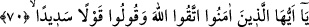

Tekvin (var olma) yasağıyla yasaklandığı gibi de olmamıştır. Nitekim Allah Teâlâ Hz.
Peygamber (s.a.)’e “O halde emrolunduğun gibi dosdoğru ol.” (Hûd, 11/112) Yâni
var edilme sırasında tekvîn emri ile istikâmet ile emrolunduğun gibi dosdoğru ol.
Nitekim O (s.a.) emrolunduğu gibi olmuştur. Allah Teâlâ tekvîn nehyiyle Hz. Peygamber
(s.a.)’i yasaklayarak şöyle buyurmuştur: “O halde sakın câhillerden olma!” (el-
En‘âm, 6/35). İşte O (s.a.) cehâletten nehyolunduğu gibi câhillerden olmamıştır.
70. Ey îman edenler! Allah’tan korkun ve doğru söz söyleyin.
“Ey îman edenler!” Allâh’ın ve kulların haklarına riâyet etmek konusunda “Allah’tan
korkun”
Allâh’ın emrine itâat etmek Allâh’ın haklarından, özellikle Rasûlü hakkında eziyeti
terk etmek de kulların haklarındandır.
Vâsıtî der ki: “Takvâ, dört türlüdür. Avâmın takvası, şirkten korunmaktır. Havâssın
takvâsı, günahlardan korunmaktır. Evliyânın havâssının takvâsı ise fiillere tevessülden
korunmaktır. Peygamberlerin takvâsı ise Allah’tan yine Allâh’a sığınmaktır.
“Ve” hangi konuda olursa olsun “doğru” hakka meyledin “söz söyleyin.”
Burada ‘doğru söz söylemek’ özellikle zikredilmiştir. Doğru söz (kavl-i sedîd/kavl-i
sıdk) kendisiyle sırf Allah rızâsı murâd edilen, kendisinde asla başkalık ve yalan
şâibesi olmayan sözdür. Çünkü takvâ, nefsi bir şeyi yapmak yahut yapmamaktan dolayı
cezâya müstehak olmaktan korumaktır. O halde söz bu takvâya dâhil değildir. Bazıları
doğru sözün takvâya dâhil olduğunu söylemişlerdir. Takvâ emrinden sonra doğru sözün
tahsis edilmesi, takvânın rukünlerinin en büyüklerinden olduğu içindir.
Kâşifî şöyle demiştir: “Bu hususta câmi olan görüş şudur: Kavl-i sedîd, yalan değil
doğru olan, hatâlı değil isâbetli olan, şaka değil ciddî olan sözdür. İşte böyle söz
söyleyin.”
Âyette kasdedilen onları doğru sözün zıddından nehyetmektir. Yâni Hz. Zeyneb (r.a.)
hakkında haktan ve doğrudan uzaklaşarak söyledikleri sözlerden onları menetmektir. İfk
hâdisesi ve Hz. Zeyneb’in kıssası gibi sözde yalan söylemeyin ve yanlışlık yapmayın.
Allah onları her konuda sözlerini doğru yapmaya sevketmektedir. Çünkü dili korumak
ve doğru sözlülük bütün hayırların başıdır.
Hikâye edilir ki Arap dili âlimlerinin büyüklerinden İbn Sikkît diye tanınan Ya‘kûb
b. İshâk, bir gün halîfe Mütevekkil ile beraber oturuyordu. Bu sırada Mütevekkil’in iki
oğlu Mu‘tezz ve Müeyyed oraya geldiler. Mütevekkil İbn Sikkît’e: “Hangilerini daha
çok seviyorsun, benim bu iki oğlumu mu yoksa Hasan ve Hüseyin’i mi?” diye sordu. İbn
Sikkît: “Vallahi, Hz. Ali’nin hizmetçisi olan Kanber senden de oğullarından da daha
hayırlıdır.” dedi. Bunun üzerine Mütevekkil: “Bunun dilini kökünden koparın” dedi.